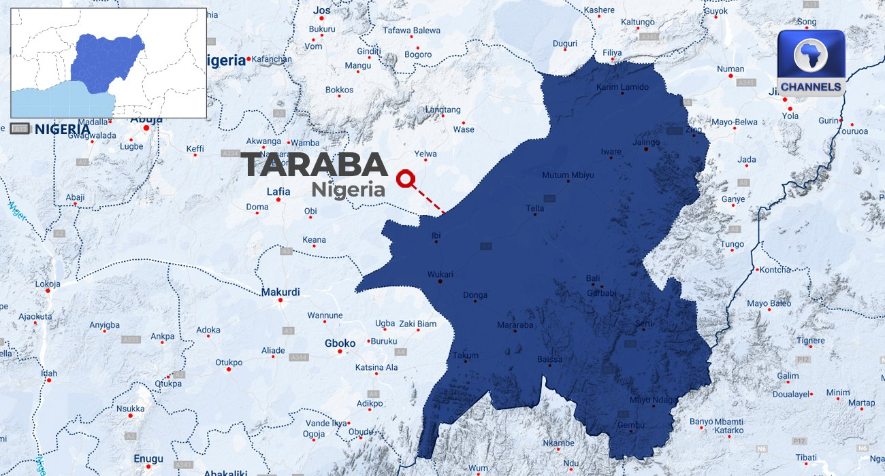

Taraba Community Puts Death Toll From Binnari Attack at 50, Govt Delivers Relief Materials

Community accounts put the death toll from a gunmen’s attack on Binnari, in Taraba State’s Karim Lamido Local Government Area, at 50, while police said 10 bodies had initially been recovered. The attack took place on Friday shortly after Jumu’ah prayers. The assailants reportedly fired weapons, looted food and homes, and set shops and motorcycles on fire.
Police said the 10 bodies had gunshot wounds and were handed to families for burial according to Islamic rites. Community members said searches after the attack uncovered 27 more bodies in surrounding bushes, followed by 13 bodies in a river and nearby bushes. Some of the latter were reportedly children; community accounts said some victims drowned while others were struck by stray bullets. Residents also said the attackers came from neighbouring Plateau State and that Binnari had previously been attacked three times.
Police, army personnel and other security teams were sent to the area, with additional personnel placed on alert. A local hunters’ association commander said security forces’ response prompted the attackers to flee. Community representatives called for stronger border security and better road access to Karim Lamido, saying poor roads make it harder for security personnel to reach affected communities. Taraba Governor Agbu Kefas condemned the killings and urged security agencies to restore calm and pursue those responsible. He also called on residents to remain calm and cooperate with security forces.
The Taraba State Emergency Management Agency has delivered food and non-food supplies and assessed the damage to determine further needs. Thousands of residents have reportedly been displaced and are sheltering in neighbouring communities. The agency’s executive secretary urged residents to remain vigilant and share information with security operatives. The state government said it was deploying more security personnel, while the victims have been buried in a mass burial. Kefas has also approved ₦1 billion for the state’s Bureau for Peace and Conflict Management to address the aftermath of earlier crises and support peace initiatives in Karim Lamido.
Source: Channels TV